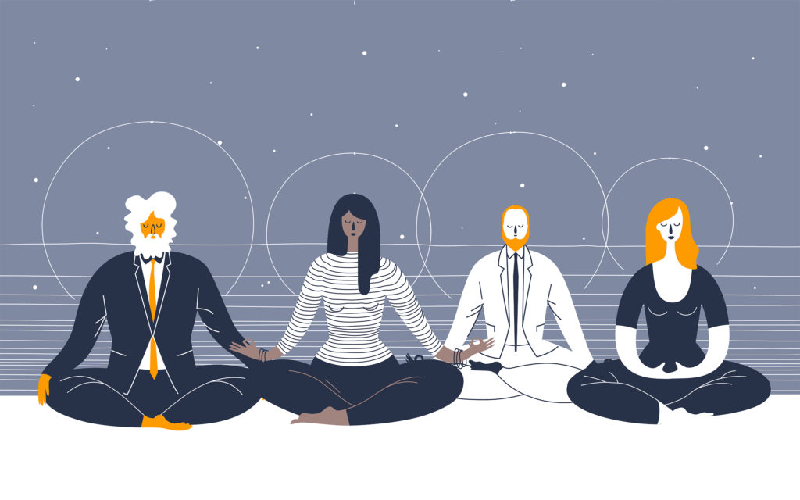

Mindfulness Meditation:

Mindfulness is the basic human ability to be fully present, aware of where we are and what we’re doing, and notor overwhelmed by our environment. Mindfulness meditation practice couldn’t be simpler: take a good seat, pay attention to the breath, and when your attention wanders, return.

Nearly every task we perform in a day—be it brushing our teeth, eating lunch, talking with friends or exercising—can be done more mindfully. When we are mindful of our actions, we pay more attention to what we are doing. It’s the opposite of going through the motions—instead, you are tuned into your senses, noticing your thoughts and emotions even during busy times.
Meditating is simple yet challenging, to unite the mind and the body is not an easy feat to achieve, you can practise meditating by finding a good spot in your home, ideally where there isn’t too much clutter, where you can find some peace and quiet. Leave the lights on or sit in natural light. You can even sit outside if you like, but choose a place with little to no distraction. Then, sit in a neat manner, maintaining good posture and just focus on yourself and nothing else.
It is insanely flexible and has no ideal amounts of time as you can customise it according to your own schedule, any amount of time will suffice as long as you see improvement of your health in the long run.